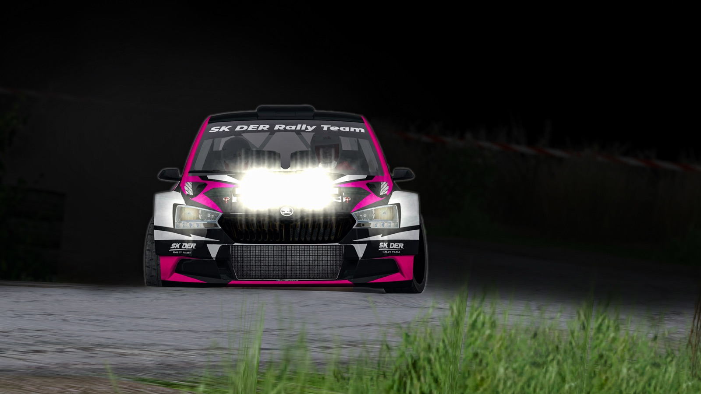
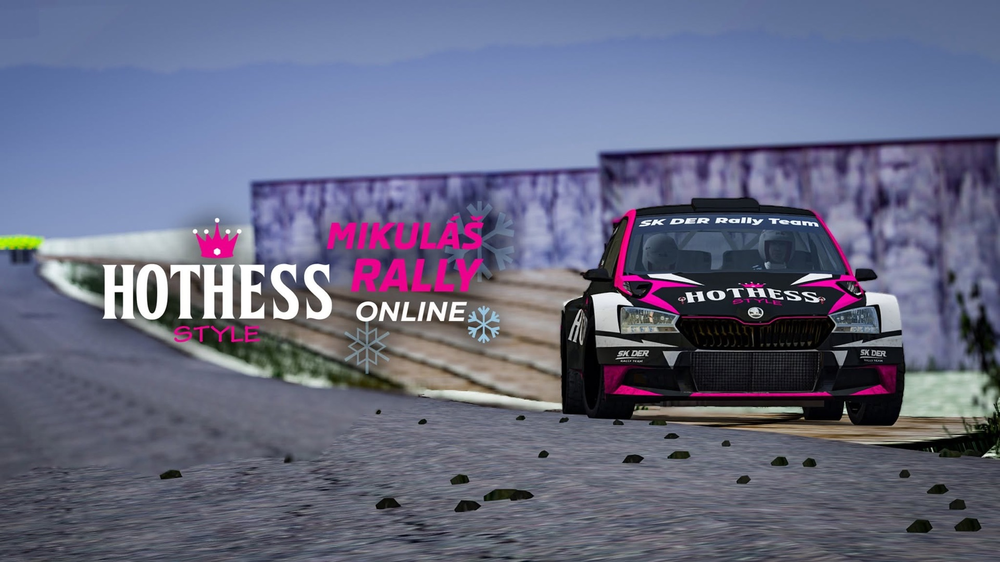
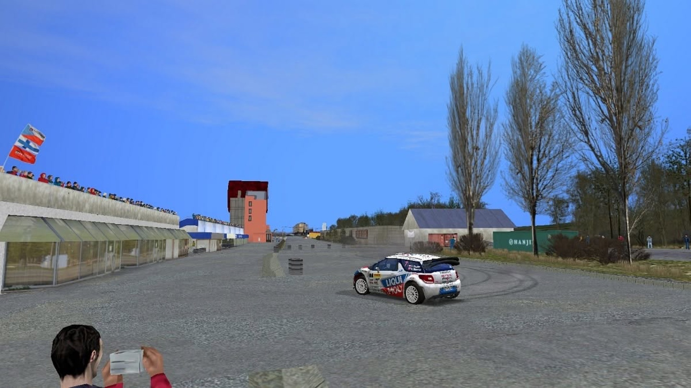
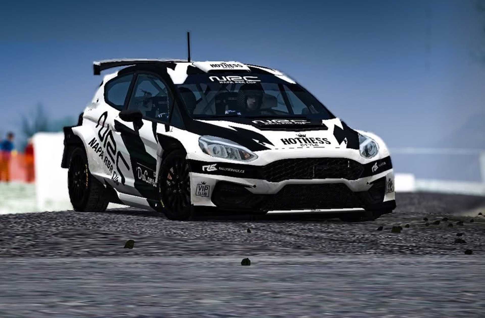
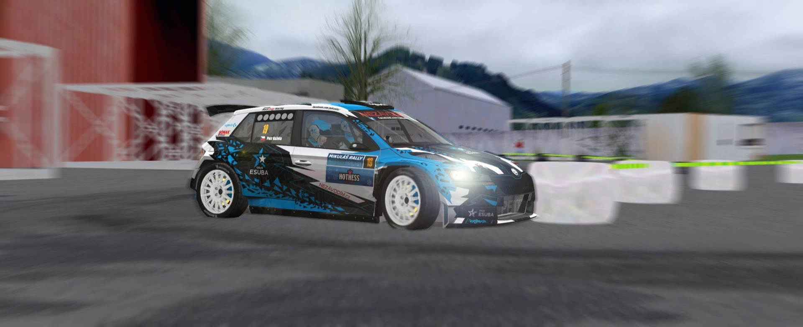

Dostihovka okruh
5,37 km
Divácky populární okruh okolo slušovického dostihového závodiště. Jede se dvakrát.
Richard Burns Rally · Slušovice
První virtuální závod na světě vytvořený ve 100% podobě oproti reálné předloze v Richard Burns Rally.
Příběh projektu
Předobrazem virtuálního podniku se stala slušovická Mikuláš Rally, která každoročně uzavírá motoristickou sezonu v Česku.
Hlavní partner jejího ročníku 2019, společnost HOTHESS s.r.o., si vzala pod křídla i její online variantu a během několika měsíců ve spolupráci s promotérskou skupinou NRC kompletně převedla do virtuální reality tehdejší podobu mikulášského závodu.
Na jezdce tak čekala hned trojice nových rychlostních zkoušek – divácky populární okruh okolo slušovického dostihového závodiště a klasická rychlostní zkouška vedoucí z Lípy do Slušovic (obě se jedou dvakrát) – a na závěr krátký exhibiční test využívající opět část slušovického okruhu.
Premiéra se uskutečnila ve dnech 3.–8. 11. 2020 pod názvem HOTHESS Mikuláš Rally Online 2020 – jako závěrečný podnik MMČR v Online Rally, který se jel na českém pluginu pro hru Richard Burns Rally. A to všechno v kompletních 100 % podle reálné předlohy.
Celý příběh a vývoj tratíAktuální ročník
6. ročník HOTHESS Mikuláš Rally Online se pojede jako volný závod v rámci šampionátu RaceX Cup v termínu 21.–27. 11. 2026 na českém pluginu rbr.onlineracing.cz.

Rychlostní zkoušky
5,37 km
Divácky populární okruh okolo slušovického dostihového závodiště. Jede se dvakrát.
6,69 km
Klasická rychlostní zkouška z Lípy do Slušovic. Jede se dvakrát.
1,17 km
Krátký exhibiční test na závěr, využívající opět část slušovického okruhu.
Předloha: reálná Mikuláš Rally 2019 – RZ 1,3 Dostihovka, RZ 2,4 Fagus – Lípa, RZ 5 final stage
Vývoj tratí 2020




Archiv
Všichni vítězové a výsledky dosavadních ročníků Mikuláš Rally Online.
Články a videa
Reportáž – HOTHESS Mikuláš Rally Online 2020
HOTHESS Mikuláš Rally Online – intro